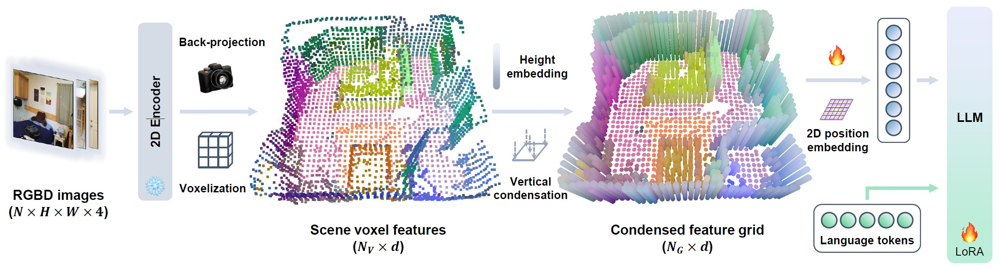
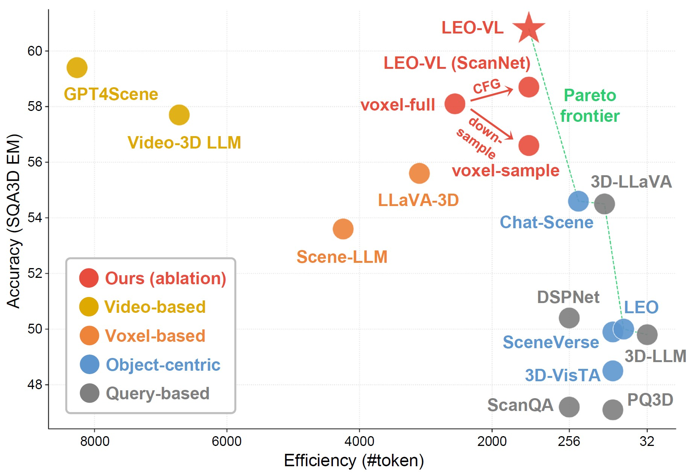
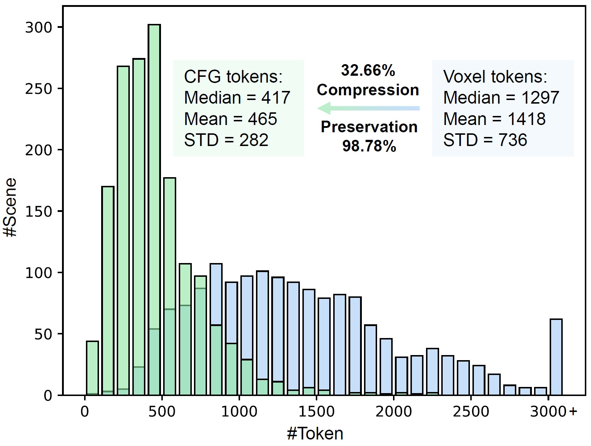
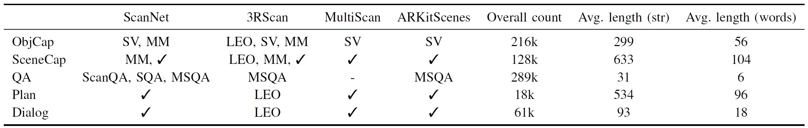
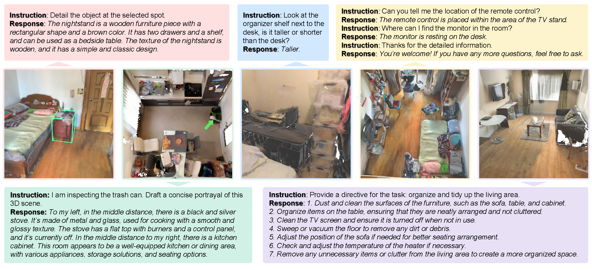
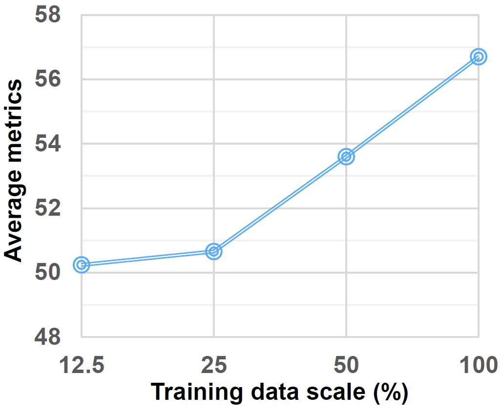
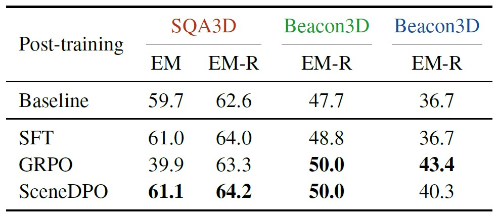

LEO-VL model flow: RGB-D inputs ➜ 2D perception ➜ back-projection ➜ voxels ➜ condensed feature grid ➜ LLM

LEO-VL achieves a new accuracy-efficiency Pareto optimum

Condensed feature grid significantly reduces token overhead
LEO-VL data overview: "SV" stands for SceneVerse, "MM" for MMScan, "✓" for newly created data in this work, and "-" for filtered data due to quality control. The "4 domains × 5 tasks" scheme yields over 700k 3D-VL data samples.


Qualitative examples of LEO-VL performing diverse tasks across diverse scene domains

Consistent data scaling effect
SceneDPO is a post-training objective for 3D VLMs with three core components:

Post-training results, including in-domain (SQA3D) and out-of-domain (Beacon3D) evaluation
If you find our work helpful, please consider citing us:
@article{huang2025leovl,
title={LEO-VL: Efficient Scene Representation for Scalable 3D Vision-Language Learning},
author={Huang, Jiangyong and Ma, Xiaojian and Linghu, Xiongkun and He, Junchao and Li, Qing and Zhu, Song-Chun and Chen, Yixin and Jia, Baoxiong and Huang, Siyuan},
journal={arXiv preprint arXiv:2506.09935},
year={2025}
}